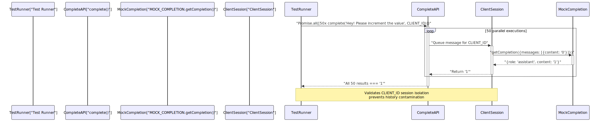

The agent-swarm-kit framework includes a comprehensive test suite that validates multi-agent orchestration, session management, tool execution, and concurrent operation handling. The testing system covers integration patterns, resource cleanup, error recovery strategies, and edge case handling across all core components.
Tests are organized using the worker-testbed framework and focus on validating behavioral contracts between ClientAgent, ClientSwarm, ClientSession, and related service components. The test suite emphasizes concurrent operation safety, proper resource disposal, and deadlock prevention in multi-agent scenarios.
The testing system validates behavioral contracts across all framework components through focused test suites that exercise specific interaction patterns.

The connection.test.mjs suite validates concurrent session handling and message queuing across multiple client connections, ensuring race condition prevention and proper resource isolation.
| Test Function | API Under Test | Validation Target |
|---|---|---|
"Will clear history for similar clientId after each parallel complete call" |
complete(USER_MESSAGE, CLIENT_ID, TEST_SWARM) |
History isolation across 50 concurrent calls |
"Will orchestrate swarms for each connection" |
session(clientId, TEST_SWARM), changeToAgent() |
Agent state per clientId |
"Will queue user messages in connection" |
makeConnection(), execute() |
Sequential message processing |
"Will allow server-side emit for makeConnection" |
emit(), listenEvent() |
Event propagation without history pollution |
Concurrent Session History Isolation Test Flow

The navigation.test.mjs suite validates agent switching mechanisms and deadlock prevention during tool execution across multi-agent workflows.
Navigation test functions validate these behavioral contracts:
changeToDefaultAgent(): Returns to defaultAgent from addSwarm() configurationchangeToPrevAgent(): Traverses agent history stack maintained by ClientSwarmchangeToAgent() calls within tool executioncommitToolOutput() doesn't indefinitely blockAgent Navigation with Deadlock Prevention

The validation.test.mjs suite ensures proper dependency checking and schema compliance across all system registration functions.
| Validation Test | Missing Component | Expected Behavior |
|---|---|---|
"Will pass validation when all dependencies provided" |
None | session(CLIENT_ID, "test-swarm") succeeds |
"Will fail validation when swarm is missing" |
addSwarm() call |
session() throws validation error |
"Will fail validation when completion is missing" |
addCompletion() call |
session() throws validation error |
"Will fail validation when agent is missing" |
addAgent() call |
session() throws validation error |
"Will fail validation when tool is missing" |
addTool() call |
session() throws validation error |
"Will fail validation when swarm defaultAgent not in the list" |
defaultAgent not in agentList |
session() throws validation error |
The validation system verifies dependency resolution through these registration functions:
addSwarm({swarmName, agentList, defaultAgent}): Validates defaultAgent exists in agentListaddCompletion({completionName, getCompletion}): Registers completion provider for agent referenceaddAgent({agentName, completion, tools}): Validates completion and tool dependenciesaddTool({toolName, call, validate, function}): Registers tool schema for agent referenceDisposal tests validate proper cleanup of session resources across different API usage patterns.
| API Pattern | Function | Cleanup Validation |
|---|---|---|
| Session API | session() + disposeConnection() |
Session list empty |
| Connection API | makeConnection() + disposeConnection() |
Agent lists cleared |
| Direct Complete | complete() + auto-dispose |
History lists cleared |
The disposal tests verify that swarm.sessionValidationService properly tracks and cleans up all session-related resources.
The test execution follows a structured pattern that validates system behavior across different scenarios and edge cases.

The test suite implements mock completion providers through addCompletion() to simulate AI model behaviors without external API dependencies.
| Pattern | Implementation | Test Usage |
|---|---|---|
| Increment Completion | String(parseInt(content) + 1) |
Concurrency and history isolation validation |
| Navigation Completion | tool_calls: [{function: {name, arguments}}] |
Agent switching and tool execution testing |
| Empty Response Completion | {content: "", role: "assistant"} |
Rescue strategy and placeholder testing |
| Conditional Tool Calling | if (content === REQUEST) return tool_calls |
Context-aware navigation simulation |
Mock Completion with Tool Calling Pattern

This pattern enables testing of changeToAgent(), tool execution flow, and multi-agent orchestration without requiring actual AI model integration.
Rescue strategy tests validate the system's ability to recover from various failure scenarios including non-existent tools, empty outputs, and failed validations.
| Rescue Scenario | Configuration | Expected Behavior |
|---|---|---|
| Non-existent Tool | CC_RESQUE_STRATEGY: "flush" |
Return placeholder message |
| Empty Model Output | CC_EMPTY_OUTPUT_PLACEHOLDERS: ["Resque"] |
Use configured placeholder |
| Failed Tool Validation | Tool validate: () => false |
Skip tool execution, use placeholder |
The rescue tests ensure that the system gracefully handles edge cases without crashing or hanging indefinitely.